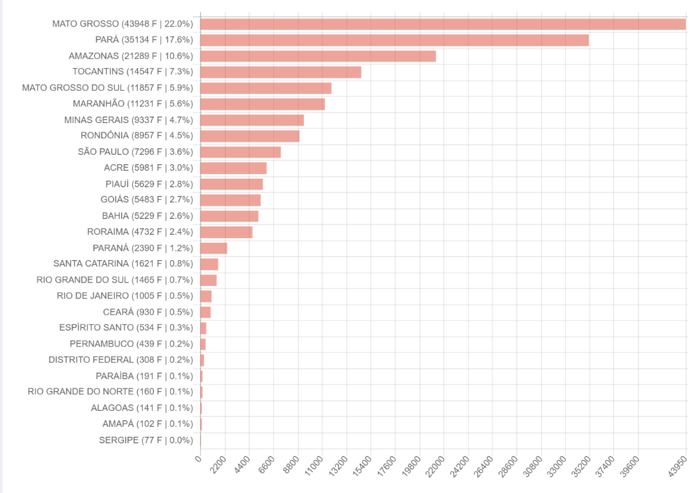

Consequências das Queimadas
As queimadas causam diversos impactos, tanto ambientais quanto sociais:
Impactos Ambientais:
Os prejuízos para o meio ambiente são incalculáveis, já que comunidades inteiras de animais e plantas correm risco de extinção, tanto por morte direta quanto pela perda de seu habitat. Além disso, as queimadas geram um desequilíbrio no ecossistema, como a alteração do regime de chuvas.
Impactos Sociais e Econômicos:
As queimadas têm uma série de impactos socioeconômicos significativos que afetam tanto as comunidades locais quanto a economia em geral. Primeiramente, elas podem resultar na degradação da qualidade do ar, levando a problemas de saúde pública, como doenças respiratórias, que aumentam os custos com saúde e reduzem a produtividade da força de trabalho. Além disso, as queimadas frequentemente causam a perda de terras agrícolas devido à erosão do solo e à alteração do ecossistema, impactando a produção de alimentos e, consequentemente, a segurança alimentar.
Gráfico demonstrativo:
Abaixo estão os focos de incêndios em todos os estados brasileiros até o momento no ano de 2024:
Créditos:BDQueimadas